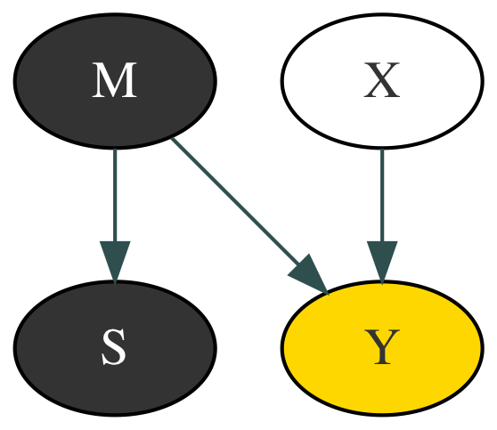

Exposing Selection Bias
P(y|x) = 0.53
P(y|x') = 0.2
P(x) = 0.95 (P(x') = 0.05)
P(m|s) = 0.9 (P(m'|s) = 0.1)
P(y|x, m, s) = 0.61
P(y|x, m', s) = 0.5
P(y|x', m, s) = 0.5
P(y|x', m', s) = 0.5
P(y
x
|s) = 0.5, P(y
x'
|s) = 0.5
,
P(y) = 0.5
,
P(x, y) = 0.25, P(x, y') = 0.25, P(x', y) = 0.75, P(x', y') = 0.75
Variables
Var
Description
X
Eating lobster
Y
Happiness
M
Income
m is ≥ poverty
m' is < poverty
S
Selection
